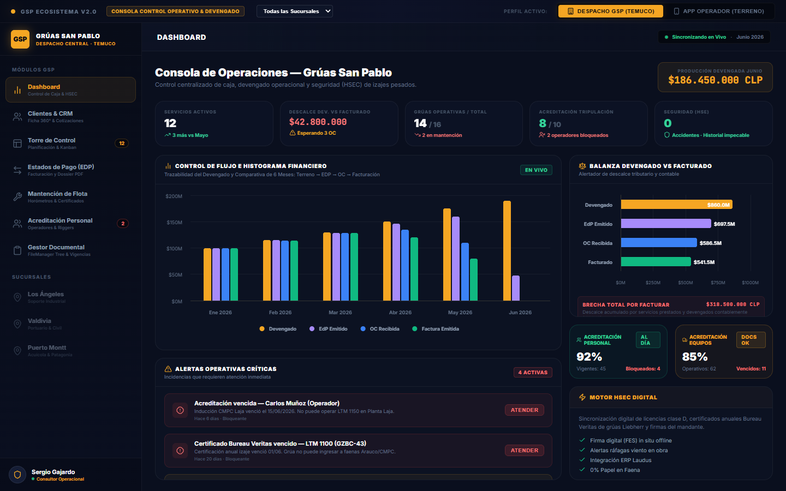
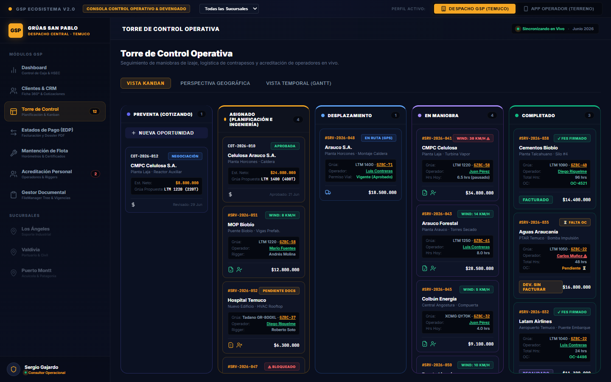
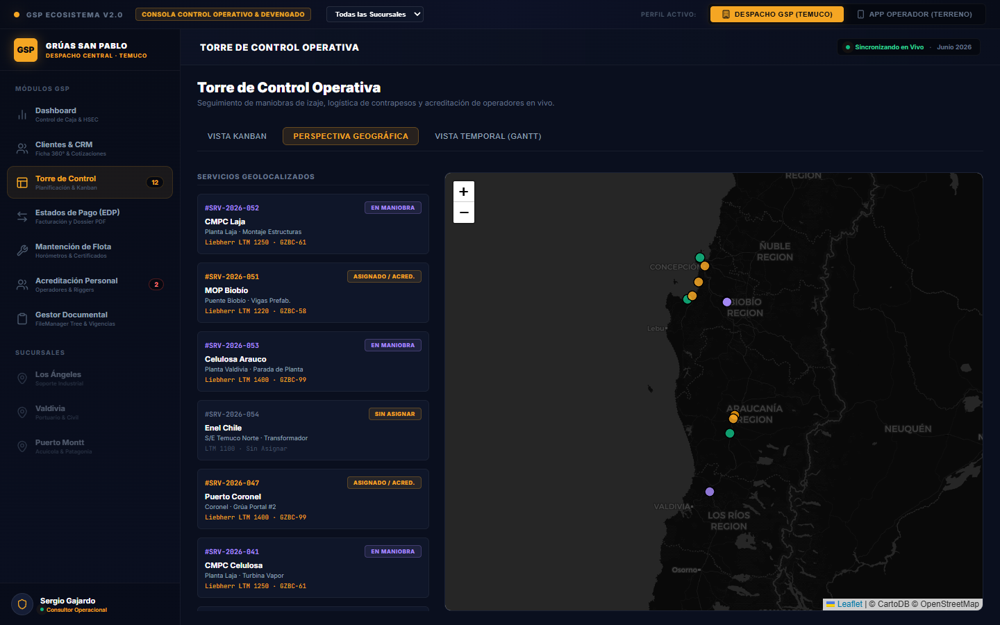
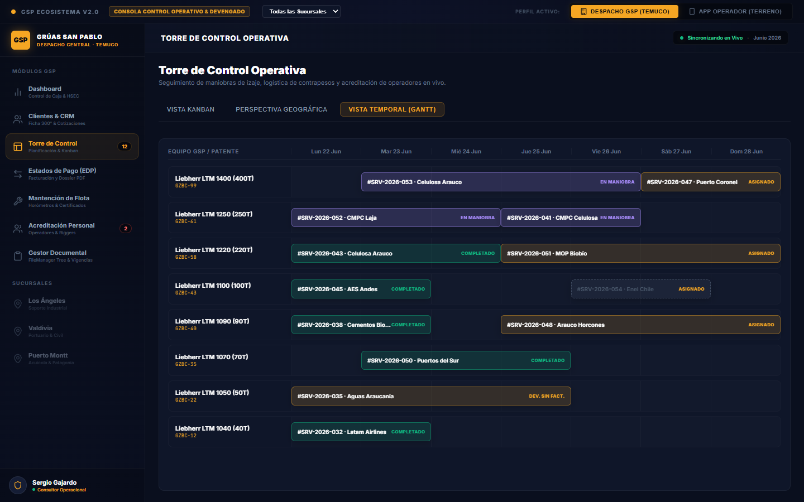
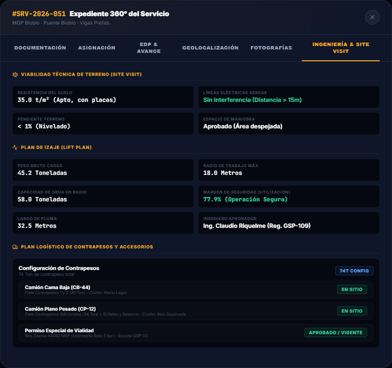
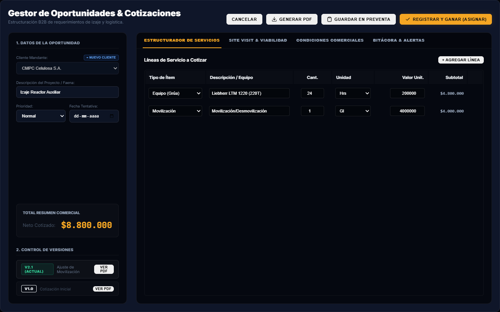
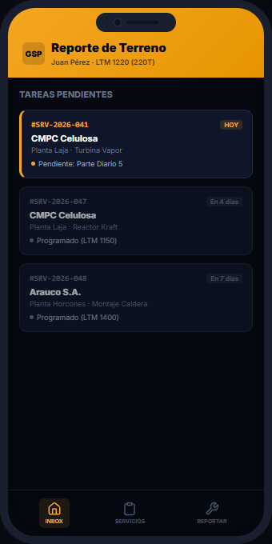
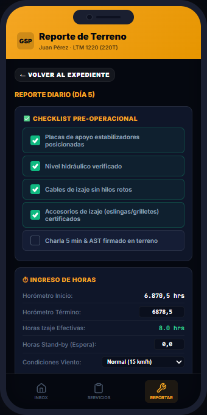
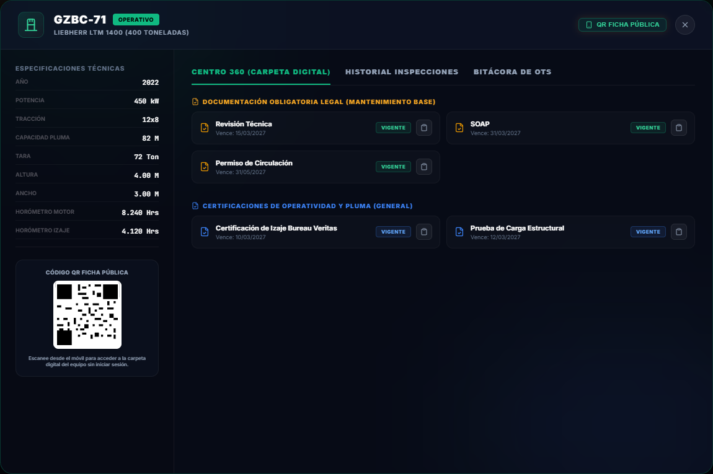
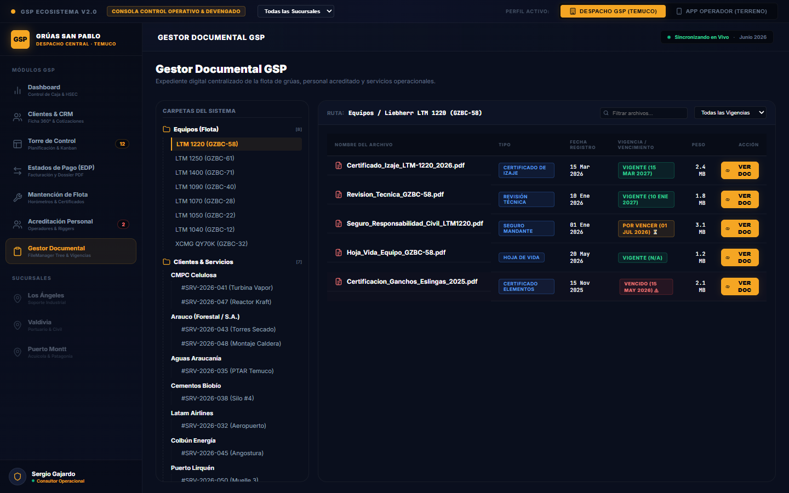

Sistema de Control de Gestión
de Operaciones - CRM
para Grúas San Pablo
Modernización digital "0% Papel" para la gestión de operaciones de izaje de alto tonelaje, control comercial CRM y conciliación de estados de pago automatizada.
1. Quiénes Somos
LeanGlobal es una firma de consultoría tecnológica, desarrollo y servicios de software especializada en la transformación digital de operaciones industriales complejas, gestión de activos, logística de transporte y HSEC.
Nuestro enfoque se basa en construir sistemas operativos de alta densidad y aplicaciones móviles robustas con funcionamiento offline que cierran la brecha de información entre la faena (terreno) y la administración comercial (casa matriz).
2. Pilares del Ecosistema & Funcionalidades Core
El ecosistema operacional propuesto está estructurado sobre tres pilares fundamentales que mitigan el riesgo operativo, seguidos por un núcleo de 9 módulos específicos construidos del producto.
A. Pilares del Soporte Operativo
Minimizamos el ingreso manual eliminando reportes por correos o WhatsApp. Toda la información ingresa directo mediante Apps móviles o consolas web con validaciones estrictas y listas de selección para asegurar la integridad de los datos.
Sin demoras por transcripción ni carpetas compartidas en red. En el momento en que se captura el registro en terreno, viaja de manera directa y segura al servidor para estar disponible inmediatamente para la toma de decisiones financieras.
Registro permanente e inalterable de cada evento en la nube. Permite responder con precisión e inmediatez quién, cuándo, dónde y qué acción se realizó dentro de la operación, respaldando las auditorías de grandes mandantes.
B. Funcionalidades Core (Los 9 Módulos del Sistema)
La arquitectura del sistema incluye 9 módulos interconectados que manejan el flujo operativo de inicio a fin:
Formularios digitales flexibles adaptados para la toma de firmas, checklists mecánicos, registro de orómetros, fotos de terreno y geolocalización.
Orquestación y despacho de tareas preventivas u operacionales asignando responsables, grúas autorizadas e instalaciones del mandante.
Aplicación nativa móvil con persistencia local que permite a los operadores operar 100% offline en zonas de faena sin cobertura celular.
Validación de reportes de terreno por niveles: Supervisor GSP aprueba datos técnicos y Analista valida el calce contractual antes de facturar.
Firma Electrónica Simple (FES) integrada para el operador y cliente, garantizando la validez legal del cierre de la maniobra de izaje.
Control de accesos robusto que limita vistas según responsabilidad: Despachador (Temuco/Los Ángeles), Operador, Facturador y Gerente.
Sincronización bidireccional automática en cuanto el móvil recupera cobertura de internet, subiendo fotos y firmas sin intervención del usuario.
Acceso inmediato desde tablet a los Load Charts (tablas de carga) de grúas Liebherr/Tadano, planos de maniobra y documentos operativos.
Tableros dinámicos en tiempo real y componentes de análisis para proyectar descalces y automatizar auditorías documentales de acreditación.
3. Proceso General de Operación de Grúas de Alto Tonelaje
El servicio de izaje y transporte pesado de Grúas San Pablo se rige por un flujo lineal de alta criticidad técnica y de seguridad. El ecosistema digitalizado mapea e interviene cada una de sus fases:
| Fase Operativa | Descripción y Actividades Técnicas | Roles Involucrados |
|---|---|---|
| 1. Comercial & Levantamiento | El cliente solicita el servicio. Se realiza el Site Visit presencial para evaluar el espacio físico, la estabilidad del terreno y líneas de tensión. Se cotiza en ruta desde la sucursal más cercana (Temuco, Los Ángeles, Valdivia o Puerto Montt). | Gerente Operaciones Vendedor Comercial |
| 2. Ingeniería & Planificación | Se genera el Lift Plan (Plan de Rigging) matemático-físico (centro de gravedad, radio de giro, outriggers). Se programan las grúas autorizadas y se gestionan los permisos viales para el traslado de contrapesos y grúas de gran envergadura. | Ingeniero de Izaje Programador Logística |
| 3. Ejecución en Terreno | Movilización en cama baja y camiones planos. Armado y nivelación de la grúa en terreno. Inspección diaria de accesorios de izaje (eslingas, grilletes) y AST. Ejecución de la maniobra de izaje guiada por radio/señales del Rigger. Registro de orómetros finales. | Operador de Grúa Rigger / Aparejador Supervisor HSE |
| 4. Cierre & Facturación | Desmovilización y desarme del equipo del sitio. El cliente firma electrónicamente (FES) en terreno el reporte de horas final. Generación automática del borrador del Estado de Pago (EDP) y conciliación inmediata en casa matriz. | Analista Facturación Gerente Operaciones |
Intervención Digital en el Proceso de Izaje
A continuación, se detalla la correspondencia entre las etapas operativas y las intervenciones digitales específicas que el ecosistema introduce en cada fase, optimizando los tiempos muertos y asegurando la captura de información:
| Fase del Proceso de Izaje | Intervención Digital Concreta | Cobertura de Módulos |
|---|---|---|
| Fase 1: Comercial & Levantamiento | Registro digital de visitas técnicas (Site Visit) en terreno. Chequeo de viabilidad de accesos (ancho, radio, cables). Búsqueda rápida de grúas Liebherr/Tadano de referencia en la biblioteca. | 5 / 9 Módulos |
| Fase 2: Ingeniería & Planificación | Carga digital del Lift Plan / Plan de Rigging. Asignación automatizada de grúa física y personal habilitado (licencia D al día). Firma FES del Ingeniero validando plano de rigging. | 6 / 9 Módulos |
| Fase 3: Ejecución en Terreno | Apertura de la App móvil en modo offline. Registro de orómetros, checklist preoperacional de cables y eslingas, firma digital AST. Toma de fotos y firma FES del cliente en terreno. | 7 / 9 Módulos |
Matriz de Impacto y Cobertura Operacional GSP
A continuación, se detalla la interacción directa entre las etapas operativas del izaje pesado y los 9 módulos funcionales integrados en el sistema propuesto para Grúas San Pablo:
| Fase del Proceso de Izaje | Doc. Configurable |
Act. Programadas |
App / Terreno |
Flujos Aprobación |
Firma FES & Ciber. |
Roles y Perfiles |
Real-Time Sync |
Biblioteca Contenidos |
BI e IA Integrada |
Cobertura |
|---|---|---|---|---|---|---|---|---|---|---|
| Fase 1 Comercial & Levantamiento | ● |
● |
● |
● |
● |
● |
5 / 9 | |||
| Fase 2 Ingeniería & Planificación | ● |
● |
● |
● |
● |
● |
6 / 9 | |||
| Fase 3 Ejecución en Terreno | ● |
● |
● |
● |
● |
● |
● |
7 / 9 | ||
| Fase 4 Cierre & Facturación | ● |
● |
● |
● |
● |
● |
● |
7 / 9 | ||
| Cobertura por Módulo | 4/4 |
3/4 |
2/4 |
4/4 |
3/4 |
4/4 |
2/4 |
3/4 |
2/4 |
25 / 36 |
4. El Desafío Operativo y Financiero
En la gestión de servicios de izaje de alto tonelaje, existe una valiosa oportunidad de mejora en la eficiencia del flujo de caja al optimizar la comunicación entre la preventa comercial, la operación en terreno y la facturación. La centralización y automatización de este flujo mitiga el desfase temporal entre la ejecución de la maniobra y la emisión del documento fiscal, garantizando una trazabilidad oportuna y un control financiero preciso.
El Devengado: La Verdadera Productividad del Negocio
El devengado es el principio contable que reconoce los ingresos y costos en el momento exacto en que se ejecuta la maniobra (el hecho económico), sin importar cuándo se reciba la orden de compra (OC) o se logre emitir la factura en el SII.
Estabilización del EBITDA
Al devengar los servicios realizados (registrando la cuenta de activo puente "Ingresos por Facturar"), GSP evita el efecto montaña rusa en sus balances. Esto permite justificar con exactitud el capital de trabajo de la empresa ante los bancos para obtener financiamiento operacional (factoring de contratos).
Tratamiento Tributario SII Chile (NIIF 15)
El ingreso devengado no facturado tiene un comportamiento favorable según el régimen. En el Régimen General 14 A, tributa Impuesto de Primera Categoría (27%) al cierre del ejercicio anual. En el Régimen ProPyme 14 D N°3, no paga impuesto anual ni paga el IVA del Formulario F29 mensual hasta que sea efectivamente percibido en caja o facturado, resguardando la caja.
Tabla de Tratamiento Tributario en Chile (SII)
| Impuesto / Régimen | IVA Mensual (Formulario 29) | Régimen General (14 A) | Régimen ProPyme (14 D N°3) |
|---|---|---|---|
| ¿Paga Impuesto? | No Se posterga hasta la emisión de factura. |
Sí Tributa en el año del servicio (27%). |
No Tributará al ser percibido (caja). |
| Mecanismo SII | No se reporta en el RCV hasta facturar. | Declarado en Balance y RLI anual. | Conciliación restándolo en la DJ 1924. |
6. Gestión de Clientes & CRM (Módulo Enterprise 360° y Flujo de Preventa)
El módulo de Clientes & CRM de LeanGlobal para GSP ha sido diseñado bajo los estándares más exigentes del mercado corporativo (nivel Enterprise Gold Platinum Plus). Centraliza y automatiza toda la preventa comercial y la posventa operativa, sirviendo como el puente definitivo de control entre la casa matriz en Temuco y la facturación de servicios.
A. Ficha Cliente 360° y Control de Interacciones
Este módulo elimina la dependencia de notas en papel o agendas de negociación dispersas de los ejecutivos comerciales (como Gerald Aguilera). Ofrece una consola centralizada de dos columnas que incluye:
- Directorio Comercial de Cuentas: Resumen financiero instantáneo del cliente (RUT, Razón Social, Monto total cotizado/ofertado, Asignado en curso, Devengado final y Facturado real). Esto permite a la gerencia saber el valor del ciclo de vida (LTV) de cada cuenta en tiempo real.
- Bitácora Unificada de Negociación: Registro histórico e inalterable de cada punto de contacto con el cliente (llamadas telefónicas, correos, reuniones y visitas técnicas de site visit).
B. Registro de Oportunidades & Pipeline Preventa (Formulario Integrado)
El motor de captación y seguimiento descansa sobre el Gestor de Oportunidades. Este panel permite registrar y calificar en caliente cada requerimiento técnico B2B:
- Formulario de Entrada Completo: Permite ingresar la descripción de la faena, prioridad (normal/alta) y fecha estimada del servicio.
- Desglose de Líneas de Servicio: Permite agregar ítems desglosados (como horas de operación de grúas Liebherr específicas, arriendo de camas bajas para contrapesos, camionetas de escolta y riggers autorizados), calculando subtotales unitarios en tiempo real.
- Flujo de Avance: Al presionar "Registrar y Ganar (Asignar)", el estado de preventa se cierra y el proyecto pasa de forma inmediata como orden activa a la planificación de la Torre de Control (columna Asignado del Kanban).
C. Sincronización en Vivo de APIs con Laudus ERP
Para eliminar el doble ingreso de datos y la transcripción manual de planillas, el CRM incluye conectores bidireccionales automáticos de API REST con Laudus ERP:
- Sincronización de Órdenes de Compra (OCs): El sistema lee online las OCs ingresadas en Laudus por el RUT de los clientes (ej. CMPC, Arauco). Al detectar coincidencia, asocia de forma automática el número y archivo PDF de la OC al servicio correspondiente en el Kanban.
- Cierre de Facturación SII: Cuando el Estado de Pago (EDP) es aprobado en GSP, el sistema envía los datos a Laudus para facturar. Al emitirse el folio de factura, el sistema lo captura de forma online, actualiza la cuenta puente del devengado y cierra el ciclo de caja.
Mitigación de Riesgos de Integración (Laudus ERP)
Para asegurar la viabilidad del proyecto y anticipar contingencias técnicas relacionadas con la infraestructura de Laudus ERP, se establece la siguiente matriz de control de riesgos:
| Riesgo Identificado | Impacto Operacional | Probabilidad | Plan de Mitigación y Contingencia |
|---|---|---|---|
| Retraso en la habilitación de infraestructura para Laudus On-Premise | Alto (Bloqueo de la fase de pruebas e integración). | Media-Alta |
1. Definición en Kick-off: Definir en la sesión de inicio (Kick-off) la arquitectura de Laudus del cliente.
2. Condición de Desarrollo: De ser On-Premise, condicionar el inicio del desarrollo a la entrega efectiva de accesos a bases de datos o APIs locales bajo un protocolo de comunicación firmado por el encargado de TI del cliente. |
Análisis Comparativo: Laudus Cloud vs. Laudus On-Premise
A continuación se expone la tabla técnica comparativa que detalla los niveles de esfuerzo y requerimientos de conexión entre ambos escenarios de integración:
| Criterio | Escenario X: Laudus Cloud | Escenario Y: Laudus On-Premise (Local) |
|---|---|---|
| Nivel de Esfuerzo | Bajo a Medio (Predecible y acotado). | Alto (Altamente variable y complejo). |
| Mecanismo de Conexión | Consumo directo de la API REST oficial (https://api.laudus.cl) usando HTTPS y tokens Bearer (JWT). |
Acceso directo a la base de datos local (ej. MS SQL Server / Firebird) o desarrollo de un agente de sincronización local. |
| Lectura de OCs y Facturas | Estándar. Se consultan los endpoints oficiales de compras (/sales/purchaseorders) y facturación (/sales/invoices) obteniendo JSONs estructurados. |
Complejo / Manual. Requiere hacer ingeniería inversa o mapear de forma manual la base de datos local para descifrar las tablas donde se guardan las OCs y Facturas. |
| Dependencia de Terceros | Mínima. Solo se requiere que el cliente active la API en su configuración y nos entregue las credenciales de acceso. | Máxima. Se depende críticamente de la disponibilidad y velocidad de respuesta del administrador de TI del cliente para configurar accesos de red. |
| Seguridad e Infraestructura | Cumple con estándares de seguridad web nativos (HTTPS) sin requerir modificaciones en la red interna del cliente. | Suele generar alta fricción con las políticas de seguridad del cliente, ya que exige abrir puertos externos hacia sus servidores contables o crear VPNs dedicadas. |
| Estabilidad y Disponibilidad | Alta. Garantizada por los servidores de Laudus (Visma) con alta disponibilidad y monitoreo constante. | Incierta / Baja. Si el servidor físico de la oficina del cliente se apaga, cambia de IP pública o pierde conexión a internet, la integración se interrumpe de inmediato. |
| Impacto en Plazos y Costos | Tiempo de desarrollo estimado en días. Costos estables y acotados al presupuesto original. | Alto Factor de Riesgo. Puede duplicar o triplicar el tiempo de desarrollo. Requiere más horas de soporte técnico, elevando la cotización final del proyecto. |
7. Gestor Documental GSP (Expediente Digital Centralizado)
El Gestor Documental GSP es el repositorio digital centralizado de la empresa. Este módulo organiza, resguarda e indexa de forma automática toda la documentación legal de la flota de grúas y los expedientes técnicos de los servicios en terreno, cumpliendo de forma estricta con las exigencias de fiscalización de grandes mandantes del sector forestal y minero (ej. Celulosa Arauco, CMPC).
A. Expediente Digital Centralizado de Flota (Equipos)
Este módulo automatiza la administración y control de vigencias de toda la documentación obligatoria por cada grúa móvil de la flota (como la Liebherr LTM 1400 o la Tadano ATF 220G), incluyendo:
- Certificaciones Técnicas de Izaje: Revisiones estructurales e hidráulicas anuales realizadas por organismos externos autorizados (como Bureau Veritas o LSQA) requeridas para ingresar a faena.
- Seguros de Carga y Responsabilidad Civil: Pólizas vigentes indispensables para cubrir siniestros durante maniobras críticas de izaje pesado.
- Permisos Especiales de Tránsito MOP: Resoluciones viales especiales otorgadas por la Dirección de Vialidad del Ministerio de Obras Públicas para el traslado por carreteras públicas de grúas sobredimensionadas y camiones cama baja con contrapesos.
B. Biblioteca de Servicios y Acreditación de Personal
Al mismo tiempo, la biblioteca digital clasifica jerárquicamente las carpetas de servicios por cliente y por faena, sincronizando las capturas que los operadores realizan desde la App móvil:
- Documentación AST y Checklists: Los Análisis de Seguridad en el Trabajo (AST) y checklists preoperacionales mecánicos firmados en pantalla por el operador, rigger y supervisor mandante.
- Acreditación de Tripulación: Registro digitalizado y vigencia de licencias de conducir clase D, exámenes de altura física ocupacionales vigentes e inducciones vigentes para cada planta de destino.
- Integridad del Expediente: Almacena de forma inalterable las firmas electrónicas del cierre de maniobra y reportes de orómetros, respaldando contablemente el devengado operativo y el borrador de EDP.
8. Pantallas Principales del Ecosistema Operacional
A continuación se presentan capturas de pantalla de la maqueta funcional adaptada para Grúas San Pablo, demostrando la alta densidad de información y los controles del sistema.
Nota Importante: Este prototipo corresponde a una maqueta interactiva. Su propósito es describir y cifrar de forma visual el punto de destino de nuestro trabajo, sirviendo como guía conceptual y estética para el proyecto final.
A. Dashboard de Devengado Financiero & Operaciones
Esta vista unifica el control ejecutivo. Incorpora la barra de KPIs operativos en la parte superior, el histograma financiero de comparación de 6 meses (desarrollado con Highcharts), y la balanza de descalce contable que alerta la falta de Órdenes de Compra vinculadas a trabajos ya devengados en terreno.

B. Torre de Control Logística (Tablero Kanban de Servicios)
Tablero visual interactivo que reemplaza la pizarra manual de operaciones en Temuco. Este módulo centraliza las dos dimensiones más críticas de la operación de izajes:
- La Perspectiva Temporal (Cronograma Gantt / Planificación Flota): Permite programar de forma visual la asignación diaria y semanal de las grúas Liebherr y Tadano, evitando colisiones horarias del personal y optimizando la ocupación del equipamiento.
- La Perspectiva Geográfica (Seguimiento Satelital GPS / Mapa): Integra geolocalización satelital en caliente sobre mapas de control para ver la ubicación exacta de las grúas de alto tonelaje en tránsito y de los camiones cama baja propios transportando los contrapesos pesados, validando velocidades y el estado de sus respectivos permisos viales.
Las tarjetas se organizan secuencialmente en 5 columnas de avance operativo: Solicitado, Asignado (Acreditación en curso), Desplazamiento (Ruta/GPS), En Maniobra (Ejecutando en terreno) y Completado (Listo para Estado de Pago).



C. Expediente Operacional 360° (Detalle de Ingeniería & Site Visit)
Al hacer clic en cualquier servicio del Kanban, se despliega esta ficha unificada. Esta captura representa la pestaña de Ingeniería & Site Visit, la cual consolida los parámetros técnicos de viabilidad evaluados en el terreno (resistencia del suelo de 35 t/m², pendiente menor al 1%, distancia segura de líneas eléctricas) y las especificaciones físicas de izaje (peso bruto, radio, pluma de 32.5m y utilización de grúa del 77.9%). También integra la logística y asignación de las 74 Ton de contrapesos en camiones cama baja propios y resoluciones del MOP.

D. Consola de Clientes & CRM (Gestor de Oportunidades)
Esta vista unifica el control preventa y comercial. Muestra la base de datos de clientes activos a la izquierda y el expediente comercial del cliente seleccionado a la derecha, con el panel interactivo del Gestor de Oportunidades abierto para calificar el lead y cotizar las líneas de servicio para la parada de planta.

E. App Móvil del Operador (Secuencia de Terreno)
Flujo secuencial de la aplicación móvil e intuitiva en terreno, diseñada para tablets de los operadores. Cuenta con soporte offline automático y sincronización resiliente:


F. Gestión y Control de Flota 360° (Ficha de Maquinaria)
Esta pantalla representa el módulo de control de flota de GSP con la ficha unificada de un equipo seleccionado. Muestra las especificaciones técnicas completas de la maquinaria (ej. Liebherr LTM 1400 de 400 Toneladas), la vigencia en vivo de su acreditación legal (exámenes, MOP, revisiones) y su historial operativo.

G. Gestor Documental Centralizado (Árbol y Biblioteca de Archivos)
Esta captura representa la interfaz del Gestor Documental GSP en producción. A la izquierda se observa el panel con el árbol de directorios dinámico estructurado por grúa (LTM 1220, 1250, etc.) y por cliente/faena (CMPC, Arauco). A la derecha se despliega el listado de archivos en la carpeta seleccionada, incluyendo el estado de su revisión ("Vigente", "Habilitado") y enlaces directos para descarga.

9. Seguridad, Ciberseguridad y Arquitectura en la Nube
El ecosistema tecnológico está construido bajo altos estándares de disponibilidad y seguridad informática sobre la infraestructura de Google Cloud Platform (GCP), resguardando los activos digitales del negocio de Grúas San Pablo:
Arquitectura en GCP
• Servidor Cloud en Chile: Alojamiento en la región sur de GCP (Santiago) para una latencia mínima de comunicación con las sucursales de Temuco, Los Ángeles, Valdivia y Puerto Montt.
• Disponibilidad Garantizada: Arquitectura serverless escalable con backups automáticos diarios de la base de datos encriptada.
• Sincronización Offline Resiliente: Base de datos local SQLite en los dispositivos móviles que se sincroniza automáticamente a la nube central al reconectar a redes 4G/5G.
Ciberseguridad & Cumplimiento Normativo
• Seguridad de Datos: Tránsito encriptado mediante certificados SSL/TLS y encriptación de datos sensibles en reposo. Blindaje ante inyecciones de código malicioso.
• Nueva Ley de Ciberseguridad en Chile: Nuestro software está alineado con la nueva ley marco que entra en vigencia en Diciembre de 2026.
• Homologación ante Grandes Mandantes: Contar con una plataforma que garantice trazabilidad e integridad de firmas electrónicas es un requisito mandatorio para licitar en grandes forestales (Arauco, CMPC) y constructoras.
10. Cronograma de Trabajo y Plan de Hitos
Gracias al avance logrado en la fase de prototipado interactivo (Hito 1), el cual permitió acotar visualmente el alcance y congelar las especificaciones funcionales del sistema, se propone un plan de trabajo optimizado de 7 semanas de duración total para la puesta en producción, sujeto a las condiciones operativas de integración definidas a continuación:
| Hito / Fase | Entregables y Objetivos Clave | Plazo Estimado |
|---|---|---|
| Hito 1: Prototipo & Dossier | Alineación operativa, diseño del modelo de base de datos conceptual, desarrollo de la maqueta funcional interactiva y entrega de la presente propuesta formal. | Completado (Semana 1) |
| Hito 2: Configuración Técnica | Mapeo de atributos específicos de izajes de GSP en el modelo de base de datos (Prisma), especificación de endpoints específicos y preparación del protocolo de comunicación de Laudus ERP. | Semana 2 (1 Semana) |
| Hito 3: Adaptación, Integración & QA | Ajustes finos en App Móvil de Terreno, desarrollo del conector de sincronización con Laudus ERP (Cloud/On-Premise con contingencia XML/OCR), pruebas unitarias/QA, marcha blanca y capacitación. | Semana 3 a 7 (5 Semanas) |
• Marcha Blanca Acotada (Semana 7): La fase de pilotaje inicial y puesta en marcha se realizará de forma acotada sobre una selección inicial de grúas/servicios piloto, permitiendo estabilizar la operación antes del despliegue masivo a la flota completa.
Gantt de Implementación (7 Semanas)
Gestión del Alcance y Control de Cambios
El alcance técnico y funcional del proyecto está delimitado por las especificaciones, características y pantallas descritas en este dossier y en la maqueta interactiva provista. Cualquier requerimiento adicional se gestionará bajo la siguiente política:
• Evaluación de Impacto: LeanGlobal evaluará el impacto de la solicitud sobre el cronograma (semanas) y el costo del proyecto, entregando un reporte técnico en un plazo máximo de 3 días hábiles.
• Aprobación Mutua: Ningún cambio de alcance se ejecutará sin la firma de un anexo de contrato técnico y comercial por los representantes autorizados de ambas partes, resguardando la estabilidad financiera y los plazos del proyecto.
11. Oferta Comercial y Acuerdo de Soporte (SLA)
A continuación se detalla la valorización económica de la consultoría de implementación, licenciamiento del software base de LeanGlobal y los alcances del acuerdo de servicio (SLA):
| Ítem / Servicio | Monto (CLP / UF) | Forma de Pago |
|---|---|---|
| Servicio de Desarrollo & Adaptación Operativa GSP
Incluye adaptaciones para grúas Liebherr (Load Charts), cotizador dinámico, integración con API REST de Laudus ERP para facturas/OC y desarrollo de App de Terreno para Operadores. |
150 UF | 30% al inicio del desarrollo, 40% a la entrega del Hito 2 y 30% al cierre de Hito 3. |
| Licenciamiento Mensual SaaS Ecosistema LeanGlobal
Licenciamiento de la plataforma base en Google Cloud Platform. Soporta hasta 15 grúas de alto tonelaje, acreditación del personal ilimitado y consola administrativa. |
12 UF / mes | Facturación mensual anticipada a partir de la puesta en producción. |
| Capacitación en Intersucursales (Temuco, Los Ángeles, Valdivia, P. Montt)
Capacitación presencial al equipo administrativo en Temuco y manuales en PDF/videos interactivos para operadores en terreno. |
Incluido | Contemplado dentro del servicio de implementación. |
| Acuerdo de Niveles de Soporte Técnico (SLA)
Soporte operativo 24/7 para incidencias de la App de terreno de los operadores y disponibilidad del 99.9% de la consola web. |
Incluido | Soporte cubierto por la tarifa de licenciamiento mensual SaaS. |